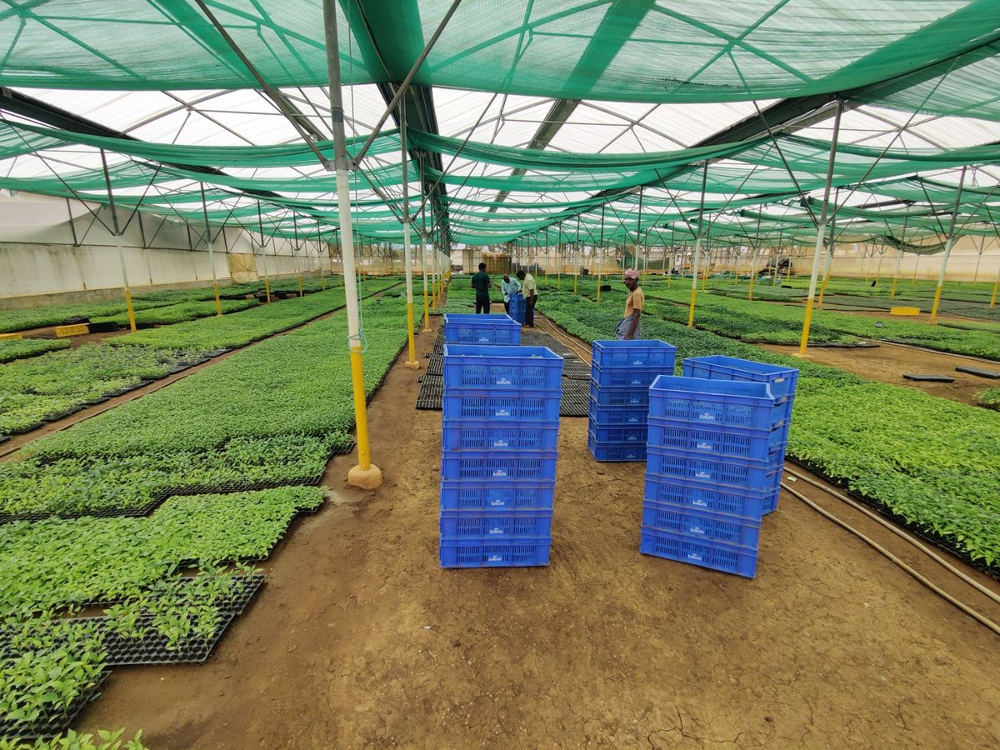
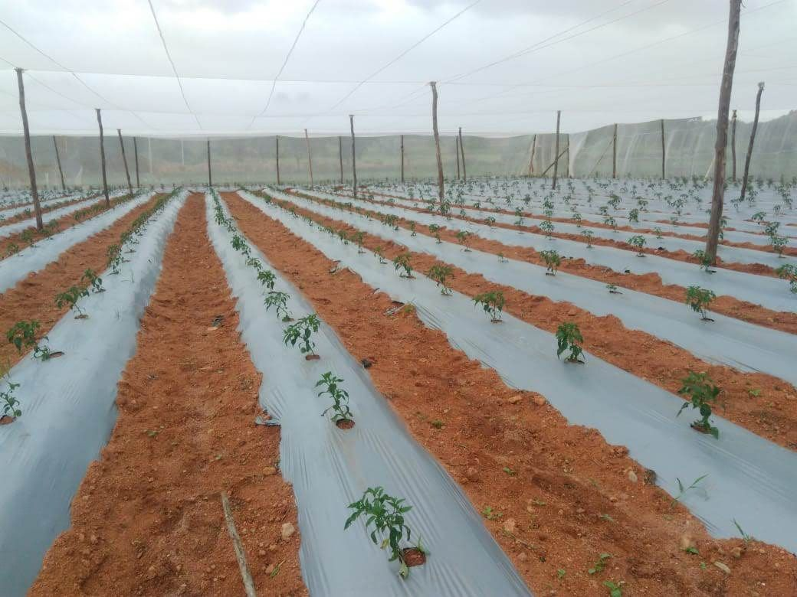

Premium Quality




Excellence in every seed, innovation in every solution
Rigorously tested seeds meeting the highest international standards
Diverse seed portfolio for different climates and agricultural needs
Generations of agricultural knowledge and local expertise
Dedicated support and guidance for successful harvests

ISIRI is dedicated to advancing Indian agriculture through superior quality seeds. We combine traditional expertise with modern innovation to deliver seeds that thrive in diverse conditions.
Connect with our agricultural experts and discover premium seed solutions